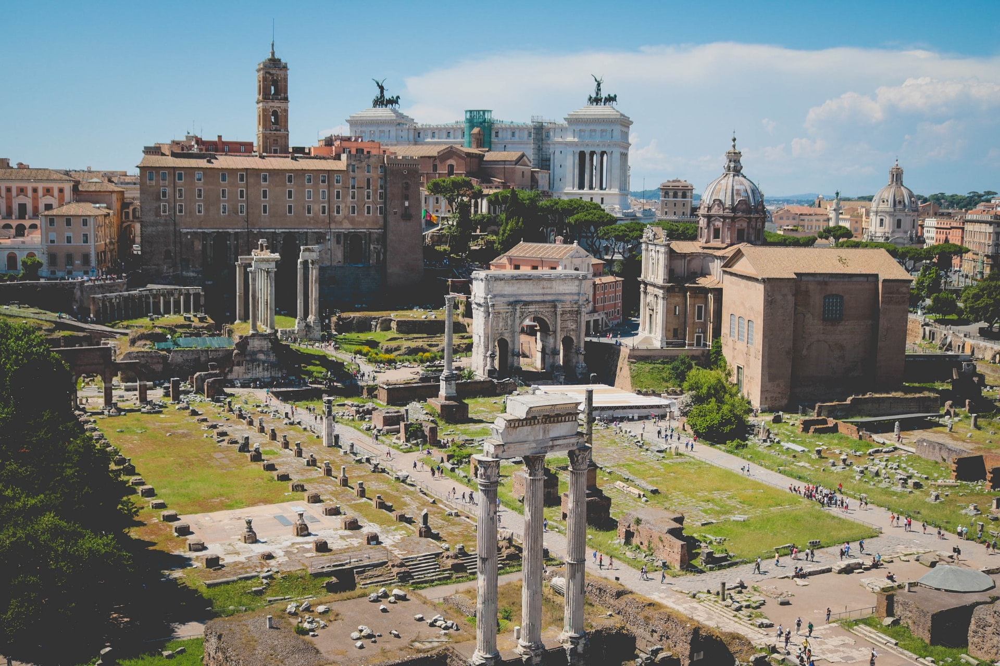
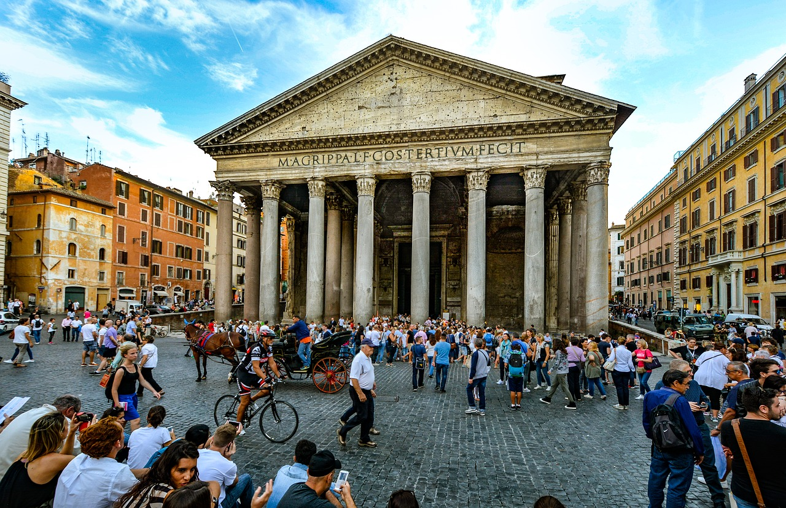

Rome today is one of the most important tourist destinations of the world, due to the incalculable immensity of its archaeological and art treasures, as well as for the charm of its unique traditions, the beauty of its panoramic views, and the majesty of its magnificent "villas" (parks).
Rome is the 3rd most visited city in the EU, after London and Paris, and receives an average of 7-10 million tourists a year, which sometimes doubles on holy years.
The Colosseum (4 million tourists) and the Vatican Museums (4.2 million tourists) are the 39th and 37th (respectively) most visited places in the world, according to a recent study.
The Colosseum

The Colosseum or Coliseum, also known as the Flavian Amphitheatre or Colosseo, is an oval amphitheatre in the centre of the city of Rome, Italy. Built of concrete and sand, it is the largest amphitheatre ever built. The Colosseum is situated just east of the Roman Forum.
Construction began under the emperor Vespasian in AD 72, and was completed in AD 80 under his successor and heir Titus.
Read more about The Colosseum at Wikipedia
The Roman Forum

The Roman Forum is a rectangular forum (plaza) surrounded by the ruins of several important ancient government buildings at the center of the city of Rome. Citizens of the ancient city referred to this space, originally a marketplace, as the Forum Magnum, or simply the Forum.
It was for centuries the center of Roman public life: the site of triumphal processions and elections; the venue for public speeches, criminal trials, and gladiatorial matches; and the nucleus of commercial affairs.
Find out more about The Forum
The Pantheon

The Pantheon (meaning "[temple] of every god") is a former Roman temple, now a church, in Rome, Italy, on the site of an earlier temple commissioned by Marcus Agrippa during the reign of Augustus (27 BC – 14 AD).
The present building was completed by the emperor Hadrian and probably dedicated about 126 AD. He retained Agrippa's original inscription, which has confused its date of construction as the original Pantheon burnt down so it is not certain when the present one was built.
Read more about The Pantheon